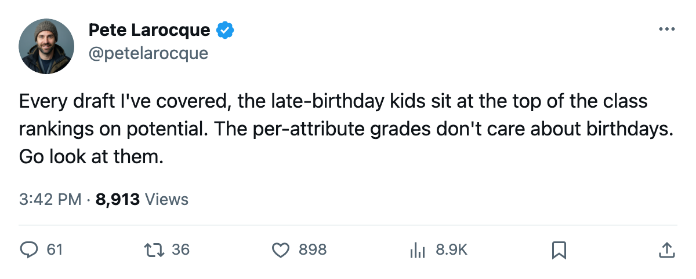
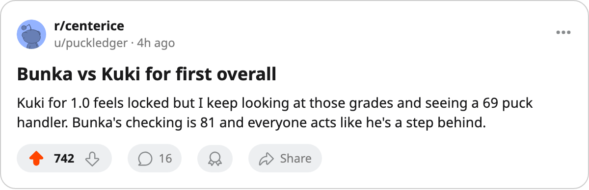

The 2006 Class's Top 4 Are All Born in 1986. Their Attribute Grades Are Not What the Potential Numbers Say.
Tuomo Pirnes carries a potential grade of 96. Five of his six per-attribute grades sit at 50, the floor of the scale.
 Pete LarocqueScouting editor · The Prospect File
Pete LarocqueScouting editor · The Prospect File
The piece
The Junior Bureau's top 4 prospects for June 2006 were all born in 1986. Toni Kuki at 99, Björn Lieder at 97, Sergej Balodis at 96, Tuomo Pirnes at 96. The next highest, Valeri Bunka, was born in 1987 and carries a potential grade of 96 with a checking grade of 81 and a shot power of 70. Pirnes carries a potential grade of 96 with five attributes at 50, the lowest grade the Bureau prints.
I have watched this at every draft. A player a year older than his competition dominates Junior leagues, and the potential model reads that dominance as upside. The birth year is the tell.
What the attributes say when the potential number doesn't
Pirnes is the cleanest example. Speed 50, accuracy 50, shot power 50, passing 50, puck handling 50. His one above-floor grade is checking at 61. The Bureau has him at 96 potential, tied with Bunka and Balodis for third in the class.
Balodis runs the same pattern with a slightly different shape. Speed 52, accuracy 59, shot power 50, passing 55, puck handling 59, checking 60. His potential sits at 96.
Kuki is the top prospect in the class. His grades: speed 60, accuracy 60, shot power 59, passing 62, puck handling 69, checking 50. His best tool is puck handling at 69. His worst is checking at 50. Not one attribute crosses 70, which is notable for the first man taken in June.
Now look at Bunka, one birth year younger. Speed 61, accuracy 69, shot power 70, passing 62, puck handling 71, checking 81. He has four grades above 69 and one at 81. His potential is 96, the same number as Pirnes and Balodis.
The Bureau's potential model has put these three players on the same rung. The per-attribute grades say otherwise.
The 1987 layer tells the opposite story
Karel Kotalik, born 1987, potential 91. His grades: speed 64, accuracy 68, shot power 73, passing 65, puck handling 74, checking 84. That checking grade is the highest of any skater in the class, one point above what Kuki's potential-99 frame would suggest. Kotalik sits at 11th in the class. Bunka sits at 5th. Both are younger than the four men above them.
Karl Jiranek, born 1987, potential 93, shot power 72. Vyacheslav Malevich, born 1986, potential 92, shot power 61. The younger man has 11 more points of shot power and sits 2 places lower in the class. Their speed grades are 66 and 66. Accuracy: 50 and 50. Checking: 50 and 50. On everything except shot power the two are identical, and the class ranking goes the wrong direction.
What this means for June
Twenty-three of the Bureau's top 40 prospects for 2006 are born in 1986. Fifteen are 1987. Two are 1988. The 1986 group fills the top 4 spots on potential. The 1987 group fills the next 3. The 1988 group's highest placement is Simon Montador at 15th, with a potential of 86.
The pattern holds at every age level. The older player looks better because he is older, and the potential model cannot fully separate physical maturity from skill development in a 19-year-old graded against 18-year-olds. I do not think the Bureau is wrong that Kuki has a 99 ceiling. I do think a team picking first in June should ask what a puck handling grade of 69 means when the competition was a year younger and the other five attributes sit at 60 or below.
Bunka will be 19 on draft night. Kuki will be 19 or 20 depending on the month. They carry the same potential number. One of them has a checking grade of 81 and four other grades above 62. The other has one grade above 62 and a checking grade at the floor.
I would take the one with the checking grade of 81.

